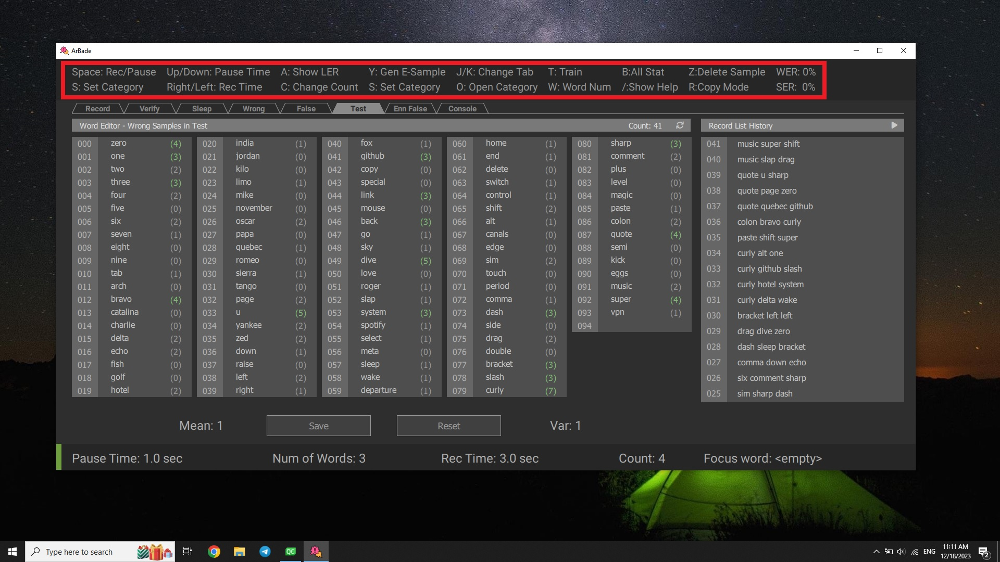
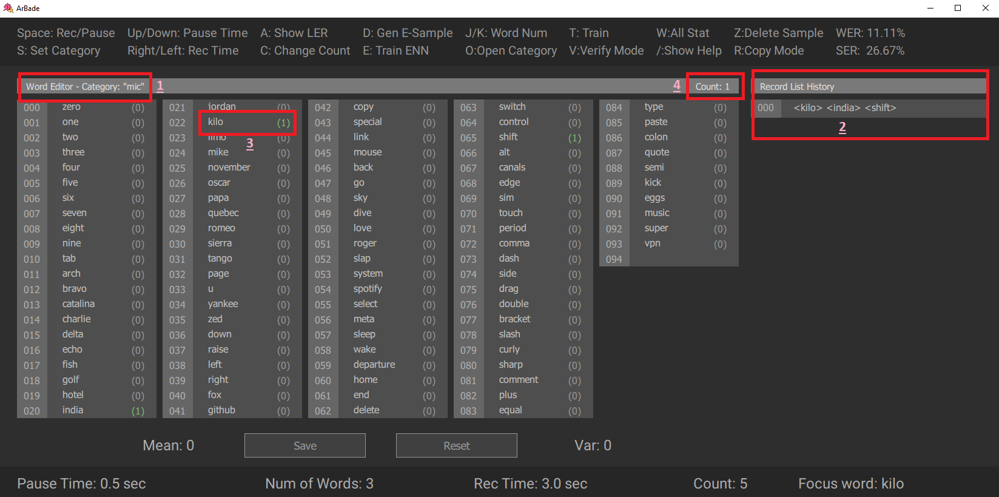

User Guide
Overview
ArBade is a shortcut based application. You can see the common shortcuts on the top bar or press / to see all the shortcuts.

Record
While recording the samples for training the voice recognition engine, you should know the status, parameters and shortcuts related to recording.
Record Status
- Rec: Records your voice
- Pause: Pause the Recording Procedure
- Stop: Stop the record and navigate to statistics panel.
- Req Pause: Requested pause will be committed after recording finished
- Break: Time to let you read the words before recording started
Record Parameters
- Category: Directories to classify samples you record with different devices. exceptions are
unverified,online,sleep,wrong,test,ennandefalsewhich are used internally by Benjamin. - Pause Time: Break time that lets you read the words before record process starts.
- Num of Words: Specify the number of words for recording samples.
- Rec Time: Defines the period of recording time.
- Count: Set this to the total number of samples you want to record in a single round.
- Focus Word: A displayed set of words will contain the
Focus Word. - Power: After recording the sample power of the voice will be displayed. Care about this parameter as this will be very low if the recording device has any problem.
- Time: Shows how much time passed from
Rec Time - Word: Shows the words you should say while recording
- Status: Shows recording status
Record Shortcuts
S: SetCategory,unverifiedandefalseare prohibited. A dialog will be shown and ask for the desiredCategory. You can create a newCategoryor change between categories produced in the past.Space: Start or Pause recording.Up/Down: Increase/DecreasePause Time.Right/Left: Increase/DecreaseRec Time.C: Change count, a dialog will be opened and ask for how many samples would you record.F: SetFocus Word, then the displayed words collection will containFocus Word. A dialog will be opened and ask for the id ofFocus Word.W: Opens a dialog to askNum of Words.O: Opens selectedCategorydirectory.
Verify
By using Benjamin regularly, many samples will be created as online samples. However, these samples are not labeled correctly. There may be some mistakes among words from a sample. These samples are accumulated in unverified directory and by verifying them, they will be moved to online directory.
Verification is done by playing the samples in unverified directory. you can refer to this section to know all status, parameters and shortcuts related to verification.
Verify Shortcuts
Space: Start or Pause playing.Up/Down: Increase/DecreasePause Time.F: SetFocus Word, then the displayed words collection will containFocus Word. A dialog will be opened and ask for the id ofFocus Word.O: Opensunverifieddirectory.Z: Press to move the sample from theunverifieddirectory to thewrongdirectory.R: Changes default decision/action for verifying samples. Copy mode means after theDecide Pausetimeout, the sample will be copied to theonlinedirectory. In the same way in Delete mode, timeout will cause sample removal.
Sleep
Verify samples recorded in sleep mode. In this mode listen to the recorded samples, if they contain any true samples press Z to get rid of them. All other samples will automatically moved to the wrong directory and they will be used to train the enn model.
Wrong
These are verified samples from the sleep directory. They are verified to be wrong samples, not true ones! In this mode, you will be able to review them and check if some samples are moved to this directory by accident.
False
During generating Enn samples, some of the samples in the train directory will not detect correctly, these samples will be moved to the efalse directory. In this mode, you can listen to these samples and judge whether they are real samples or the wrong ones which you should get rid of them.
Test
After training on samples, the model is evaluated through test samples. Word error rate (WER) and Sentence error rate (SER) are calculated by predicting test samples. Then false detected samples are listed in this tab and you can listen to them to figure out what went wrong.
Enn False
BaTool generates enn samples, from both train samples and wrong samples. The enn directory is the destination of this process. Enn files from the train directory are located in enn/true and wrong directory-related files are in enn/false. In the Enn False tab, only false statistics are shown. By clicking the trash icon, all Enn samples will be deleted.
Console
Training on samples is started by pressing T. After training is finished, a dialog pops up and asks to generate enn samples from audio samples. Neural Network will be trained from these enn samples. When generating Enn Samples is finished, another dialog arises and asks about verifying generated engine false detected samples. Engine false detected samples, abbreviated as efalse samples, are collected in the efalse directory. They are generated after training, and while testing samples in the test directory. You can verify them by switching to False and Test tabs.
Stat

- Arbitrary name of category.
- Record list showing the samples recorded.
- Word list showing how many samples include the specific word.
- sample count in specific category.